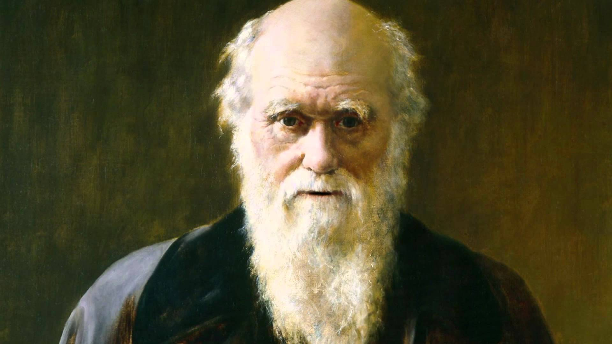

Charles Darwin
"It is not the strongest of the species that survives, nor is it the most intelligent that survives.
He is the one who is most adaptable to change"

Photo of Charles Darwin
"It is not the strongest of the species that survives, nor is it the most intelligent that survives.
He is the one who is most adaptable to change"
Photo of Charles Darwin
If you want to know more about Charles Darwin press here